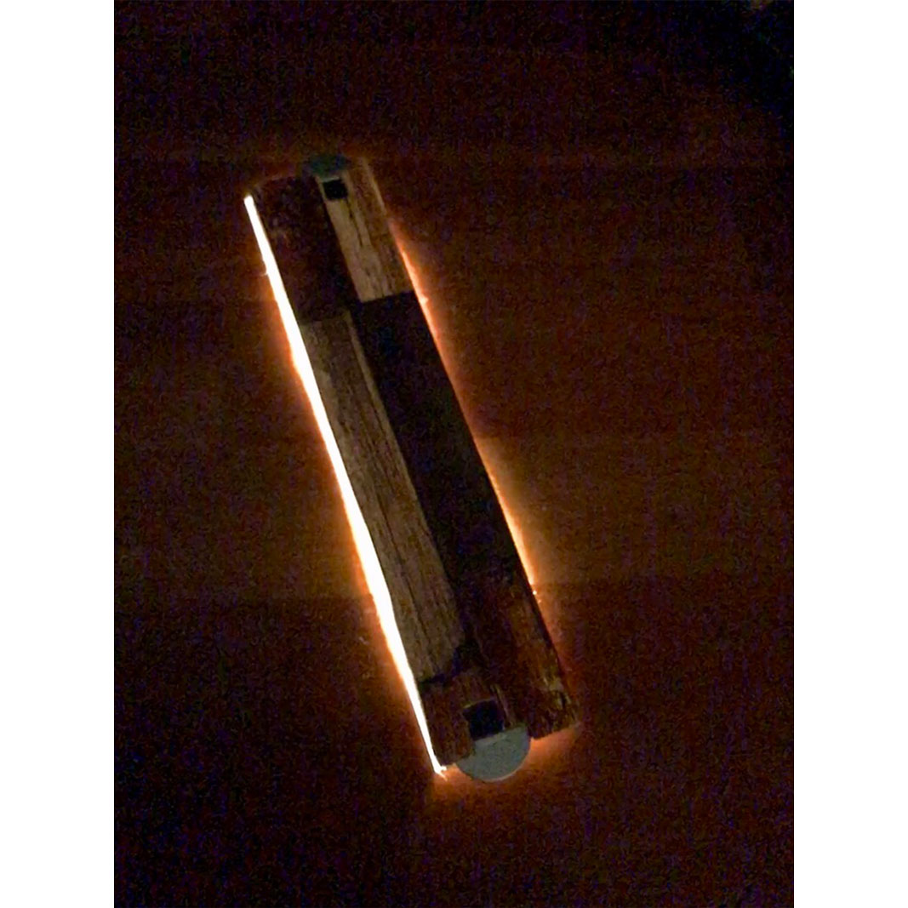
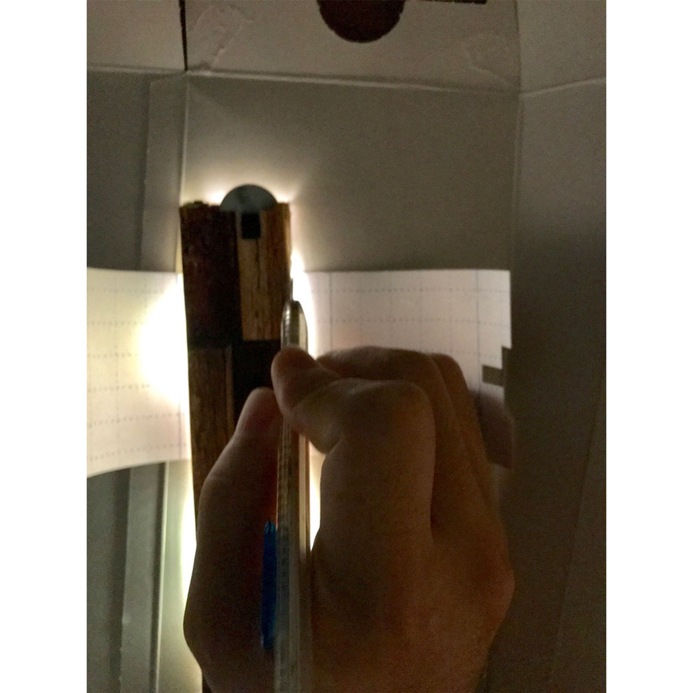
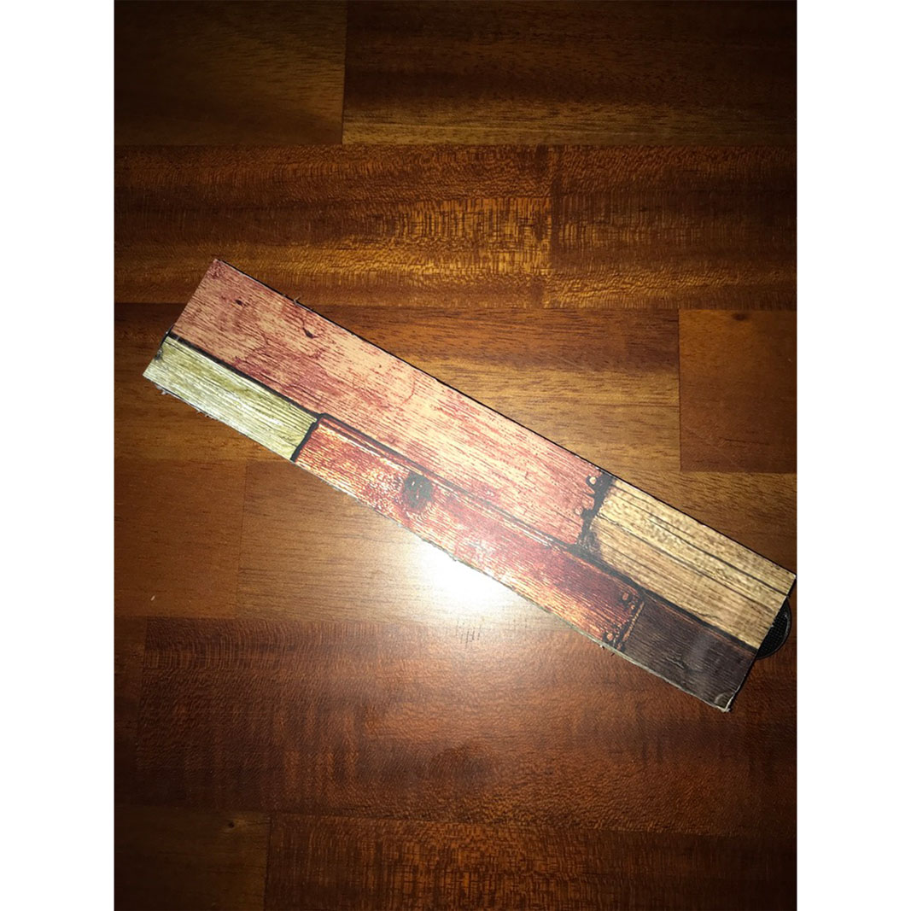

光る定規
15cmの定規で側面が光ります。
光らせるためのスイッチは電池入れの横にあります。
電池はボタン電池です。ボタン電池の種類は「CR2023」3Vです。



コンセプト
親がこう言うのが欲しいといってきたのが始まりで、親の意見を取り入れて作りました。
親からの要望は、「15cmぐらいの定規で側面だけが光り、ボタン式で長さは測れなくてもいい」ということでした。
使い方
電池入れの横にスイッチがあるのでそのスイッチを押すと光ります。
光かたも3段階あり 消→ 明→ 暗→ 点滅 →消 の順番です
ターゲットユーザー
自分の親と同じように定規が光ると便利だな、そう言うのが欲しいなと思っている人